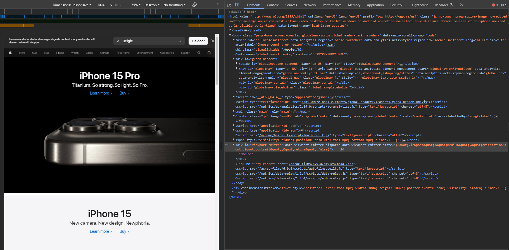

Bij deze foto kan je in de blauw geselecteerde div zien dat er staat "AND(&)quot;smallAND(&)quot;". Dit komt, omdat je de website in een kleiner formaat gaat gaan plaatsen.
Bij deze foto kan je in de blauw geselecteerde div zien dat er staat "AND(&)quot;mediumAND(&)quot;". Dit komt, omdat je de website in een wat groter formaat gaat gaan plaatsen.
Conclusie: De waarden worden aangepast wanneer je de schermgrootte van de website verandert.